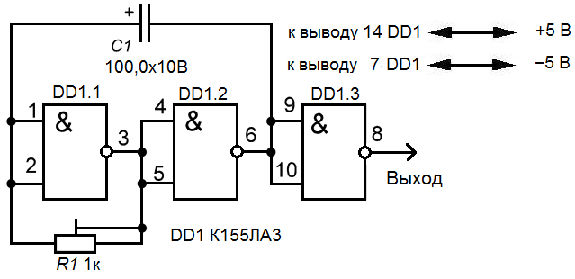

Мультивибратор на логических элементах
Самая простейшая схема, которую можно собрать на логических элементах - это генератор импульсов прямоугольной формы. Такой генератор будет работать в режиме автогенерации, подобно транзисторному мультивибратору, поэтому его и назвали также: мультивибратор на микросхеме.

Рис. 1 - Схема генератора на микросхеме К155ЛА3
При включении питания один из элементов хаотично примет одно из двух возможных положений - либо логический "0" либо "1" и повлияет на работу всех остальных элементов схемы. Пусть, к примеру, это будет элемент DD1.2: при включении на его выходе установилась логическая "1".
Конденсатор C1 начинает заряжаться через цепь: выход DD1.2 - резистор R1- выход DD1.1. пока конденсатор не зарядится до полного состояния на входе элемента DD1.1 будет удерживаться напряжение высокого уровня и он будет находится в состоянии логического "0".
Но это состояние неустойчивое: по мере зарядки конденсатора напряжение на нем будет падать и как только уменьшится до порогового, элемент DD1.1 переключится в сотояние логической "1" (на его выходе- выводе 3 появится напряжение высокого уровня). Элемент DD1.2 перейдет в состояние логического "0" а элемент DD1.3 в состояние "1".
Теперь конденсатор C1 будет заряжаться уже в обратном направлении: с выхода элемента DD1.1 через R1 на выход DD1.2. Через резистор R1 на вход элемента будет поступать и напряжение высокого уровня, но это напряжение будет шунтировано зарядом конденсатора C1 и элемент DD1 будет удерживаться в состоянии логической "1" до полного заряда конденсатора. Зарядившись полностью он перестанет пропускать ток и вход элемента DD1.1 окажется под напряжением высокого уровня, полученного через резистор R1, что переведет элемент в состояние логического "0". И весь процесс начнется заново.
Элемент DD1.3 в данной схеме играет роль инвертора и его можно исключить. Частоту импульсов генератора можно изменять подбором емкости конденсатора C1 и регулировкой резистора R1.